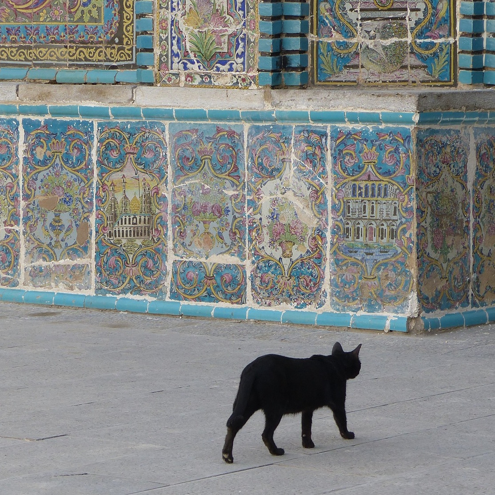
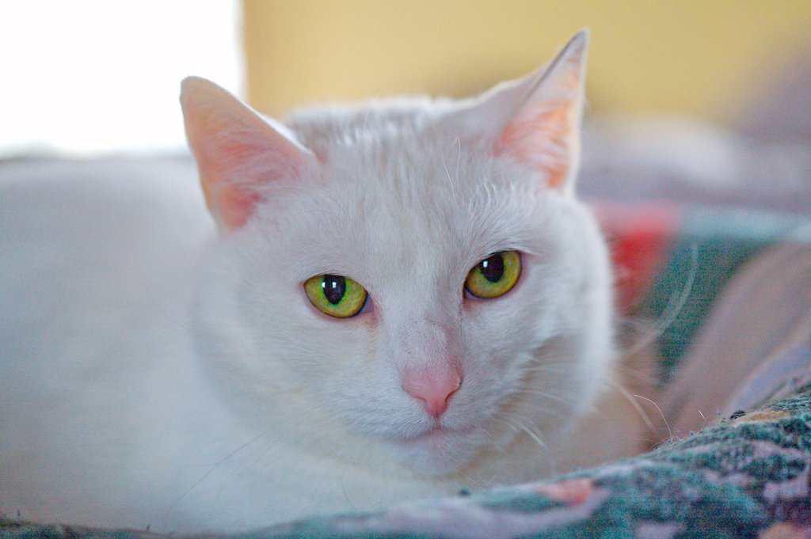
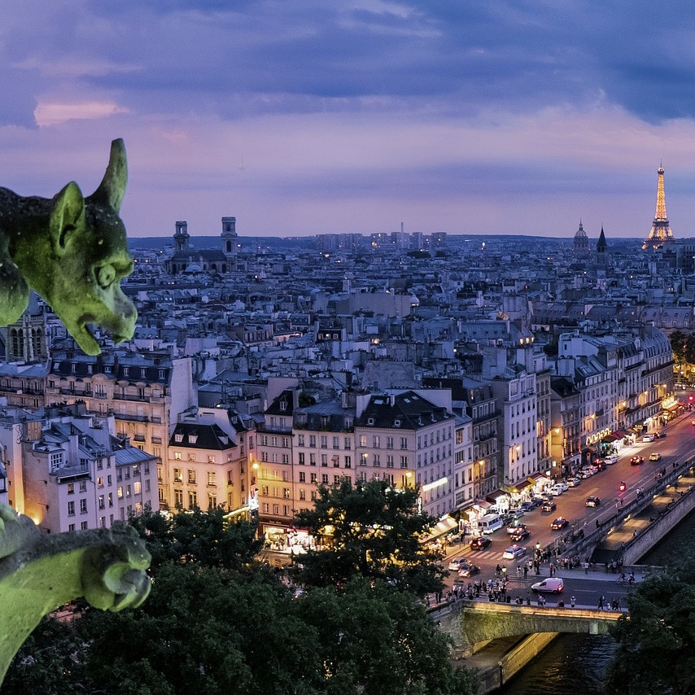

Perceptron ile Kedi Tanıma
Tek nöron · sigmoid · MSE · SGD · numpy ile sıfırdan · Kaynak kod
Bir resim yükle:
ya da bir örneğe tıkla:



Kedi olasılığı: (%50'nin üstü kedi sayılıyor)
Model nasıl eğitildi?
Model Python'da eğitildi. Bu sayfa öğrenilen ağırlıkları kullanarak tahmini doğrudan tarayıcında yapıyor; yüklediğin resim hiçbir yere gönderilmiyor.